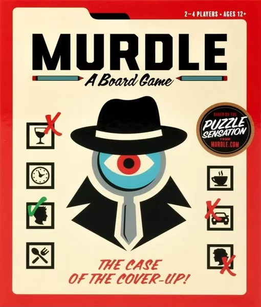

Źródło: serwis BoardGameGeek.
Murdle to wyjątkowa gra logiczno-detektywistyczna, w której wcielamy się w role śledczego badającego tajemnicze zbrodnie. Odkryj kto popełnił morderstwo, jakim narzędziem oraz w jakiej lokalizacji. Rozrywka opiera się na analizie zeznań podejrzanych, odnajdywaniu ukrytych wskazówek oraz systematycznym wykluczaniu fałszywych tropów przy pomocy specjalnej siatki dedukcyjnej.
Murdle to świetny sposób na spędzanie wolnego czasu w towarzystwie rodziny oraz przyjaciół. Rozgrywka jest niezwykle wciągająca. Dzięki tej grze każdy może poczuć się jak prawdziwy detektyw, który analizuje dowody, przesłuchuje świadków i rozwikłuje skomplikowane tajemnice.
Dowiesz się na stronie Oficjalna strona gry